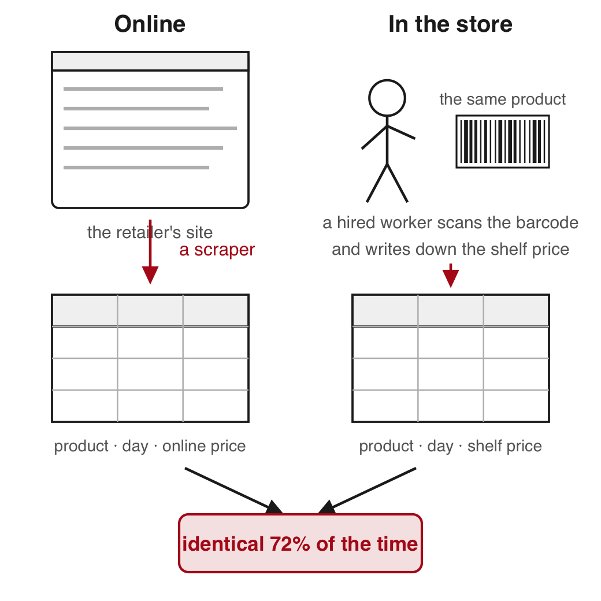
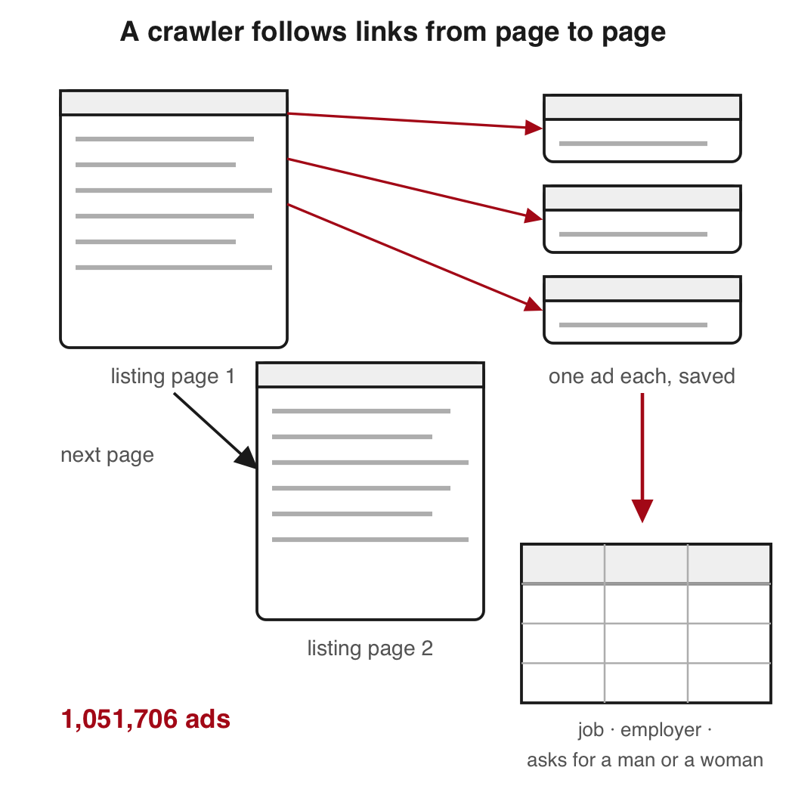
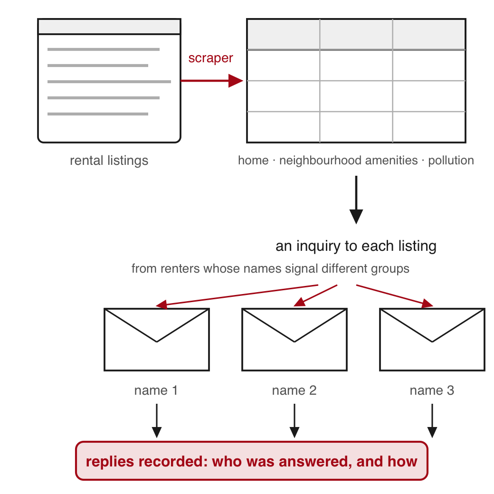
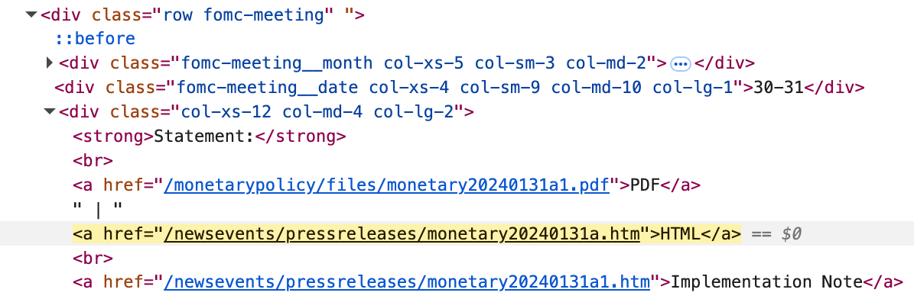
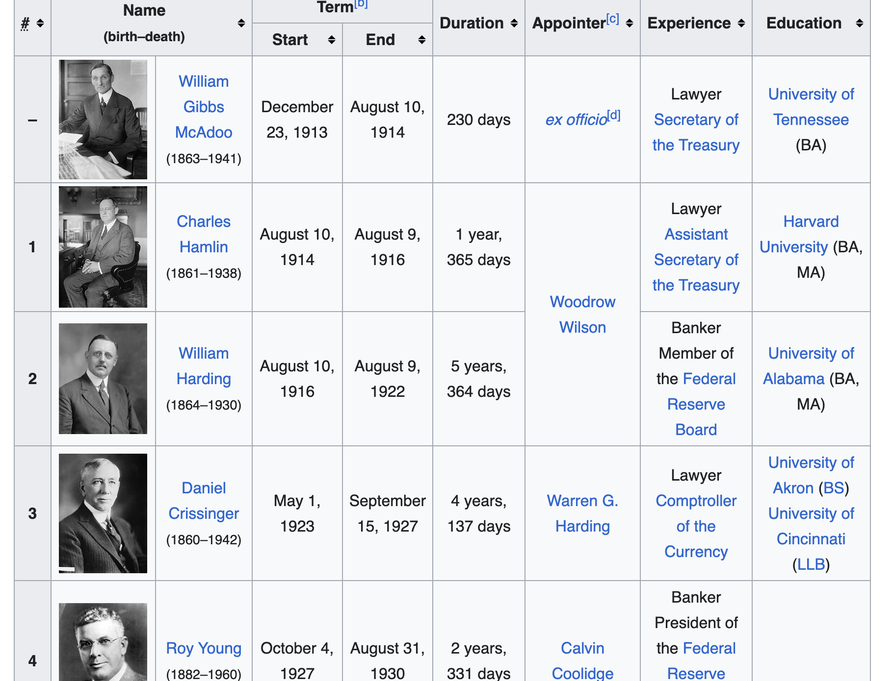
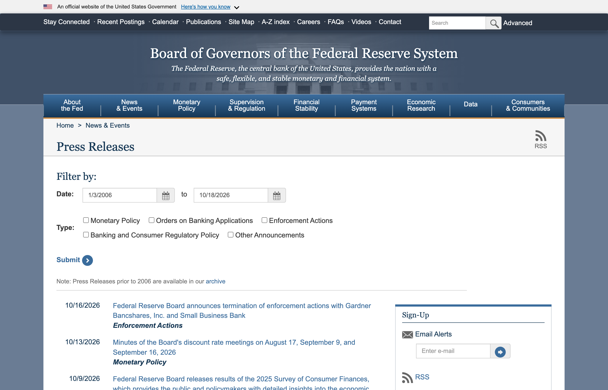
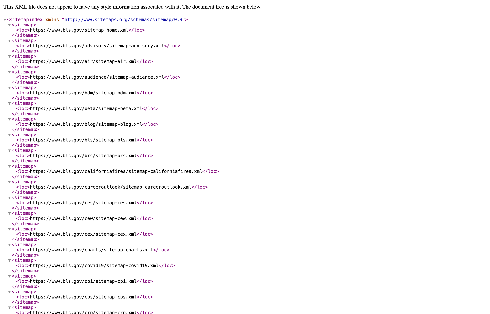

How to get data out of pages built for people, in seven steps: when scraping is the right route; the ways to collect a site (a saved page read into R with rvest and CSS selectors, static and dynamic pages, six routes to every page); what to take into account (terms, copyright, robots.txt, personal data, a polite fetch); AI tools, in R or Python; verifying what a scrape returns; a live demonstration in which two coding agents, one in R and one in Python, collect seven years of a marathon’s finish times from the same brief; and laying out a scrape so someone else can re-run it. The Federal Reserve’s policy statements since 2006 carry the code and both exercises. You will usually scrape with an AI coding agent: each piece below says what to ask it for and how to verify what it did.
The project. Install the packages once, in the R Console: install.packages(c("rvest", "httr2", "jsonlite")). Download 15-scraping.zip, unzip it, and open 15-scraping.Rproj, so that R starts in the project folder. It holds:
cache/: every page the slides use, saved as the server sent it on 18 October 2026: the meeting calendar, the fifteen year pages, 243 press-release pages, the press-release list page and its feed, two Wayback Machine listings and one 2015 snapshot, a Wikipedia article’s revision history and one Wikipedia table page. With these files every slide runs with no network.
fomc_statements.csv: the file this session builds, one row per policy statement since 2006.
fetch_page.R: the fetch function from the slides, with Exercise 2’s two long lines as comments.
agent_run/: what a coding agent was asked, what it wrote and what it produced, captured in prep.
wineglass/: the demonstration. The brief, and each agent’s scripts, file and figures from the prep run of 19 October 2026 (r/ and python/). The results pages themselves are not included: they carry runners’ names.
reference_scrape.R and build_statements.R: the scripts that built cache/ and the CSV.
SOURCE.txt: each source, its address, the date of each request, the Board’s public-domain line, and the rule that decides what counts as a statement.
mine/: created in class by fetch_page(). Your own fetches go here, so the shipped pages never change.
Objectives
By the end of this session you can:
Say when scraping is the right route, after a dataset someone built, a download, an API or feed, and a licence.
Say whether a site may be scraped from its terms of use, its robots.txt, copyright and the personal data on it.
Read a saved web page into R with read_html().
Find an element’s class with the browser’s inspector.
Pick elements out with CSS selectors, html_elements(), html_element(), html_text2() and html_attr().
Read an HTML table with html_table().
Fetch a page politely: a user agent with your address, one request a second, every page saved once as raw bytes, a fetch log.
Read a server’s status code and act on it.
Tell a static page from a dynamic one and find the file it loads.
Name six ways to find every page on a site.
Write a brief for a coding agent: the unit, the start pages, the rules, the output columns and the numbers to print.
Compare a scraped file with the site’s own lists, its feed and the scraper’s own log, and two files of the same scrape row for row.
Lay out a scraping project so the build reruns from the saved pages.
Fetch a page’s past version from the Wayback Machine.
Read a Wikipedia article’s revision history from its API.
Plan for today
When to scrape Where to look first · Zillow · three papers
The ways to collect a site What to ask an agent · CSS selectors · dynamic pages · six routes
What to take into account Terms · robots.txt · personal data · user agent · fetch_page()
AI tools, in R or Python A brief · the demonstration starts · R or Python
Verifying what a scrape returns Two other lists · a seeded sample · an agent’s log
The demonstration’s results Marathon finish times · the R file against the Python file
A scrape someone else can re-run The project folder · the Wayback Machine · Wikipedia
1 · When to scrape
Three ways to get data from a website
Web scraping: a program reads pages built for people and copies chosen pieces into a table.
Feed or API: a service that answers a program with data in a fixed structure.
HTML: the text a web page is written in.
Scrape when the first two ways do not give what you need.
The server is the computer that holds the pages and answers requests.
Today’s code and exercises collect the Fed’s policy statements
The statement of 15 June 2022, as the site shows it.
The Federal Reserve is the US central bank. Its Federal Open Market Committee (FOMC) sets the policy interest rate at eight scheduled meetings a year and publishes a written statement after each one.
The question: what has the committee said after each meeting since 2006?
The text of the statements exists only on these pages. The code in Parts 2 and 3 and both exercises work toward one file with every statement since 2006, fomc_statements.csv.
Where to look before writing a scraper
Look in this order. A scraper is the last step.
Look for
What it holds for the Fed’s policy statements
1. A dataset someone already built (a replication package, ICPSR, a vendor)
a paper’s files stop at the end of its sample; this session needs every statement to the latest one
2. A file to download on the site
interest rates as CSV files on the H.15 page; no statement text
3. An API or feed
json/ne-press.json: every release’s date, title and address; no text
4. A licence or an agreement with the publisher
not needed: the Board’s pages are public domain
5. The pages themselves
the only place the text exists, so scrape
With an agent. Before you brief a scrape, ask an assistant where else the data might be: a replication package, an archive, a download, an API. Then confirm each lead on the site yourself.
ICPSR (the Inter-university Consortium for Political and Social Research) is the largest US archive of social-science data; openICPSR holds many journals’ replication packages. The H.15 page is the Board’s release of selected interest rates.
Where researchers get Zillow’s housing data
Zillow lists homes for sale and for rent across the US. Its listing pages are a case for not writing a scraper.
The pages are closed to programs. The terms forbid “automated queries (including screen and database scraping, spiders, robots, crawlers …)”. The robots.txt disallows /homes/. One polite request from R met a press-and-hold human check.
The listings carry personal data: agents’ names and phone numbers, photos of people’s homes.
The data come by the routes on the last slide.
A download: Zillow Research’s CSV files of home values, rents and inventory.
A dataset someone built: Zillow’s transaction records (ZTRAX), through ICPSR.
A licence: listings from an MLS (the shared database real-estate agents list homes in) or from a data vendor.
Question. Are the prices a retailer posts online the same as the prices in its stores?
What he did. He wrote a scraping program for each of 56 large retailers in 10 countries. Hired workers scanned the same products in the stores and wrote down the shelf price. The program took the online price within a week.
Finding. Prices were identical about 72 percent of the time. Online and in-store prices did not change on the same days, but changed about as often and by about as much.
Takeaway: scraped prices can stand in for prices collected by hand once you have measured how often the two agree.

A million Chinese job ads from a crawler, coded for whether they ask for a man or a woman
Crawler: a program that follows links from page to page and saves each one.
What they did. They ran a crawler on Zhaopin.com, one of the largest Chinese online job boards, in four rounds of collection. It saved 1,051,706 ads. They coded whether each ad asked for a man, for a woman, or for neither.
Finding. Ads that asked for one sex were common. They asked for women about as often as for men. They were much rarer in jobs that need more skill.
Takeaway: a crawler turns a job board into data on what employers ask for, in their own words.

Discrimination in rental housing, measured with inquiries to scraped listings
Context. US law (the Fair Housing Act) bans discrimination by race in renting a home.
What they did. A program collected every three-bedroom, two-bathroom rental listing on a major online platform in five US metropolitan areas, with each neighbourhood’s amenities and pollution. It then sent each listing inquiries from fictitious renters whose names signal race or ethnicity. The replies are the data.
Finding. Discrimination cost African American renters the equivalent of 4.4 percent of annual income, and Hispanic/Latinx renters 3.5 percent.
Takeaway: scraping supplied the sample of homes and each home’s neighbourhood data. The inquiries supplied the outcome.

2 · The ways to collect a site
What you ask an AI agent for, and what you verify
You will usually scrape with an AI coding agent: it writes the fetch, the selectors and the loop. Parts 2 and 3 show each piece so that you can ask for it and verify it. No function needs memorizing.
Ask for, in the brief
Verify, in what comes back
The unit, and the rule that decides what counts
its count against a second list: the site’s own, a feed, a stated total
The start pages and the route to every page
each selector, run on a saved page, against what the browser shows
A user agent with your address, one request a second, each page saved once, a log
each rule in its code; its report against its log
What to do at a 403, a CAPTCHA or a login page
the status codes in its log
The fields to keep, and no personal data
its printed output and its file
The numbers to print when it is done
those numbers against the browser, the site’s totals, a paper
Each slide that follows ends with what its piece means when an agent does the work.
The Fed’s meeting calendar
The FOMC (the Fed’s policy committee) issues a statement on the last day of each meeting.
Each row links the statement (PDF and HTML), an implementation note (the technical instructions that go with the decision), the press conference and the minutes (the written record of the meeting).
Each year from 2006 to 2020 has its own page. Each statement has its own page.
With an agent. Name these start pages in the brief: the calendar for 2021 on, and the year-page address for 2006 to 2020. Together they list every meeting.
The statements file this session builds
R Console, in the 15-scraping folder; reads fomc_statements.csv, the statements file (built from cache/ by build_statements.R)
ours <-read.csv("fomc_statements.csv") # ours: the statements filedim(ours)
#> [1] 171 5
ours[c(1, nrow(ours)), c("date", "words", "scheduled")] # the first and the last row
#> date words scheduled
#> 1 2006-01-31 216 TRUE
#> 171 2026-09-16 131 TRUE
Press release: one page in the Fed’s press-release section.
Policy statement: the release that announces the committee’s rate decision after a meeting or a call. From here on, “statement” means policy statement. The file leaves out the site’s other releases: implementation notes, the longer-run-goals statement, lending announcements.
One row per statement, 31 January 2006 to 16 September 2026. The file stops at the pages saved on 18 October 2026; the live site adds a statement after each meeting.
Columns: date, url, words, text, scheduled. scheduled is TRUE after a scheduled meeting and FALSE after an unscheduled call or a notation vote (a vote taken in writing).
Every page used today was saved into cache/ on 18 October 2026, in the 268 requests that built it. SOURCE.txt lists every file.
Reading a page’s HTML with the browser inspector
Element: one labelled piece of the page. Its tag is the label in angle brackets (div, a); a class names elements of one kind (fomc-meeting); an id names one element only (article); an attribute is a named value in a tag, such as a link’s address, href.
Inspect (right-click a meeting date on the live page) shows the HTML behind what you point at. View Source shows the file the server sent, which is what R reads.
With an agent. Inspect the element yourself before you accept an agent’s selector, and use these words to tell it which element you mean. A chat assistant given the element’s HTML can suggest a selector built on its class.

The browser inspector on a calendar row: the row’s class, and inside it the month, the dates and the Statement links.
Safari needs “Show features for web developers” turned on in its Advanced settings before Inspect appears.
Inspect shows the page after its scripts ran, and View Source shows the file as the server sent it. If the two differ, the page is dynamic: its scripts fetched the content after the page loaded, and read_html() gets the file without that content.
Picking out elements with CSS selectors
CSS selector: a short pattern that names elements. The table shows the kinds used today and how many elements each picks out of the saved calendar.
Selector
Picks
Count
p
every paragraph (by tag)
50
.fomc-meeting
every element with class fomc-meeting
57
#article
the one element with id article
1
#article p
paragraphs inside that element
4
a[href*='pressreleases/monetary']
links whose address contains this text
100
a[href$='a.htm']
links whose address ends in a.htm
53
.fomc-meeting matches the class fomc-meeting exactly, not fomc-meeting__month. On a statement page, #article p returns the statement’s own paragraphs (Exercise 2).
With an agent. Ask it to print each selector it uses and how many elements it matched. Run the same selector on the saved page and compare the count with what the browser shows.
Reading the saved calendar with read_html()
R Console, in the 15-scraping folder; needs rvest; reads cache/fomccalendars.htm; no network
# install.packages(c("rvest", "httr2", "jsonlite")) # oncelibrary(rvest)cal <-read_html("cache/fomccalendars.htm") # the calendar as savedpanels <-html_elements(cal, ".panel-default") # one panel per yearlength(panels)
#> [1] 7
titles <-html_text2(html_element(panels, "h4")) # the first h4 (a heading) inside each paneltitles
The code reads the saved calendar, keeps one panel per year and prints each panel’s heading, in the page’s order (2026 first). html_elements() keeps every match; html_element() keeps the first match inside each element.
With an agent. Ask it to save each page before parsing it. You can then run its selectors on the same file it read.
The 2024 meeting rows as text
R Console; needs panels and titles from the previous step
#> month dates
#> 1 January 30-31
#> 2 March 19-20*
#> 3 Apr/May 30-1
#> 4 June 11-12*
#> 5 July 30-31
#> 6 September 17-18*
#> 7 November 6-7
#> 8 December 17-18*
The eight rows are the eight scheduled meetings of a year. The asterisk marks a meeting that also publishes the members’ economic projections (the page’s footnote: “Meeting associated with a Summary of Economic Projections”).
With an agent. Ask it to print a few parsed rows. Read them against the page in the browser before you trust the rest.
The links in one row, with html_attr()
R Console; needs rows
links <-html_elements(rows[1], "a") # the links in the January rowdata.frame(text =substr(html_text2(links), 1, 24), # substr(): the first 24 charactersfile =basename(html_attr(links, "href"))) # basename(): the file name at the end of the address
#> text file
#> 1 PDF monetary20240131a1.pdf
#> 2 HTML monetary20240131a.htm
#> 3 Implementation Note monetary20240131a1.htm
#> 4 Press Conference fomcpresconf20240131.htm
#> 5 Statement on Longer-Run monetary20240131b.htm
#> 6 PDF fomcminutes20240131.pdf
#> 7 HTML fomcminutes20240131.htm
html_attr() returns one attribute of each element; href is the link’s address. The addresses start with /: they are relative, and the site’s name goes in front when you fetch them.
The Fed publishes each statement as a press release, a page under /newsevents/pressreleases/. This row has three such links (rows 2, 3 and 5); only row 2 is the statement, /newsevents/pressreleases/monetary20240131a.htm.
The next slide counts the statement links by the end of the address and by the link text.
Counting the calendar’s statement links three ways
R Console; needs cal
# both selectors start with .fomc-meeting: 6 more a.htm links sit outside the rowsa1 <-html_elements(cal, ".fomc-meeting a[href*='pressreleases/monetary']") # address contains thisa2 <-html_elements(cal, ".fomc-meeting a[href$='a.htm']") # address ends in a.htmc(contains =length(a1), ends_a =length(a2),text_HTML =sum(html_text2(a1) =="HTML")) # sum() counts the TRUEs
#> contains ends_a text_HTML
#> 100 47 46
The calendar holds 46 statements: 57 rows, minus 10 meetings not yet held by the day the page was saved, minus one row that is not a meeting.
contains, 100: every press-release link in the rows (46 statements, 46 implementation notes, 6 longer-run-goals statements, 2 balance-sheet plans).
ends_a, 47: one more than the statements. Exercise 1 finds the row that holds it.
text_HTML, 46: the links named HTML are the statements.
html_attr(x, "href") returns a link’s address. Each row links its statement, its implementation note and more, so a rule must pick the statements out.
With an agent. It chooses one of these rules without telling you, and they give 47 and 46. Ask it to state its rule in its report, and compare its count per year with the meetings on the calendar.
Reading an HTML table with html_table()
Some pages hold their data in a <table>. The calendar does not, so this example uses Wikipedia’s table of Fed chairs, saved as cache/wiki_fed_chairs.htm (text CC BY-SA).
R Console, in the 15-scraping folder; needs rvest; reads cache/wiki_fed_chairs.htm
wiki <-read_html("cache/wiki_fed_chairs.htm")tbl <-html_element(wiki, "table.wikitable") # the first table of that classchairs <-as.data.frame(html_table(tbl)) # as.data.frame(): a plain data frame printdim(chairs)
#> [1] 19 9
unlist(chairs[1, 4:5]) # the header spans two rows; its second row arrives as data
#> no name start end
#> 17 15 Janet Yellen(born 1946) February 3, 2014 February 3, 2018
#> 18 16 Jerome Powell(born 1953) February 5, 2018[h] May 22, 2026[i]
#> 19 17 Kevin Warsh(born 1970) May 22, 2026 Incumbent
html_table() turns one <table> into a data frame.
This table has a two-row header. Its second header row arrives as data row 1: drop it and name the columns yourself.
Footnote markers ([h]) and “(born 1953)” stay inside the cells. That cleaning is yours.

The table as the page shows it: a two-row header (Term spans Start and End) and cells that span rows (one appointer for two chairs), which is why the data frame needs cleaning.
# Exercise 1 (5 minutes). R Console, in the 15-scraping folder; needs rvest.# No network. If you do not have cal, panels and titles yet, run these three:# cal <- read_html("cache/fomccalendars.htm")# panels <- html_elements(cal, ".panel-default")# titles <- html_text2(html_element(panels, "h4"))## 1. Keep the panel titled "2025 FOMC Meetings".# 2. Select its .fomc-meeting rows and count them with length().# 3. Print each row's month (.fomc-meeting__month) and dates# (.fomc-meeting__date) in one data frame.# 4. Find the row that is not a meeting.## Two answers to compare with the room: the number of rows, and# which row is not a meeting.
#> month dates
#> 1 January 28-29
#> 2 March 18-19*
#> 3 May 6-7
#> 4 June 17-18*
#> 5 July 29-30
#> 6 August 22 (notation vote)
#> 7 September 16-17*
#> 8 October 28-29
#> 9 December 9-10*
Dynamic pages, and the file they load
The Network tab on the Fed’s press-release list page: the page’s script requests json/ne-press.json.
Static page: the HTML the server sends is the page you see.
Dynamic page: the server sends a layout and scripts, and the scripts fetch the content after the page loads. read_html() runs no scripts, so it gets the empty layout.
The test: View Source and search for a title you can see. The Fed’s press-release list: 85 KB of HTML, “FOMC statement” zero times.
Three ways in
request the file the page loads, found in the Network tab
Copy as cURL on that request; curl_translate() turns it into R
a headless browser (one with no window): read_html_live()
With an agent. An agent that reads a dynamic page with read_html() gets the empty layout and may conclude there is no data. Give it the address of the file the page loads, from your Network tab.

The same page as the browser draws it: a list of releases that the HTML the server sends does not contain.
In more detail: open the inspector, choose the Network tab, filter to Fetch/XHR, and reload the page; the requests the page’s scripts make appear with their addresses. When a site offers a JSON endpoint the page itself calls, request that endpoint with the same politeness as a page. read_html_live() opens a real browser in the background through the chromote package, so install chromote and have Chrome on the computer. It is slower than reading a saved file, and the site’s terms apply to it as to any program.
On the saved copy, sum(grepl("FOMC statement", readLines("cache/pressreleases.htm"))) returns 0. Copy as cURL copies the request as a command for curl, a command-line program for web requests.
Reading the feed the page loads with fromJSON()
R Console, in the 15-scraping folder; needs jsonlite; reads cache/ne-press.json (live address below)
library(jsonlite)feed <-fromJSON("cache/ne-press.json") # warns about a byte-order mark (three invisible bytes); harmlessdim(feed)
#> [1] 4648 7
fs <- feed[grepl("FOMC statement", feed$t), ] # titles that contain the phrase; t is the title columnnrow(fs)
#> [1] 179
table(fs$t)[c("Federal Reserve issues FOMC statement", "FOMC statement")] # the two common titles
JSON: a plain-text format for data. fromJSON() turns the feed into a data frame of 4,648 releases: d is the date, t the title, l the link. Live address: federalreserve.gov/json/ne-press.json.
The feed gives every release’s address in one request. The statement text still lives on each page.
179 titles contain “FOMC statement”: 123 and 46 with the two common titles, 10 with longer ones. The statements file has 171 rows; Part 5 explains the difference.
A PDF or a CSV is fetched and saved like a page, as the bytes the server sent. Only the reader changes: pdftools for a PDF, read.csv() for a CSV.
With an agent. When a feed lists every page, name it in the brief and ask the agent to compare its list with the feed’s: here 179 titles against the statements file’s 171.
The feed has seven columns: d the date, t the title (HTML-escaped: & written as &), pt the type, l the link, and three more. The ten longer titles name the dollar swap lines, the longer-run goals and a change of release times.
With an agent. Name the route and the total you expect in the brief. Ask for a crawler only when no list exists: it puts the most load on the server.

The BLS sitemap index: one entry per section of the site, each pointing to a sitemap of its own.
Hershbein and Kahn found that skill requirements in postings rose more in US metropolitan areas hit harder by the 2008 recession and stayed higher. Their postings came from Burning Glass Technologies, through a special agreement, for 2007 and 2010 to 2015.
3 · What to take into account
Terms of use and copyright
Terms of use: the rules a site sets for visitors; using the site means accepting them. Look for footer links named Terms, Legal or Disclaimer. Zillow’s forbid “automated queries (including screen and database scraping …)”.
Copyright: the owner’s right to control copies. The Board puts its own material in the public domain (above): anyone may copy it; cite the Board.
Facts (prices, dates, vote counts) are outside US copyright (Feist v. Rural, 1991). The wording of a text is covered, unless it is public domain or licensed for copying.
With an agent. Read the terms yourself before you write the brief, and tell the agent what to keep: the facts, or the full text when it is public domain or licensed. Its requests carry the user agent you give it, so they go out under your name.
Outside the US, the European Union also protects a database built with substantial investment, apart from copyright (the database right, Directive 96/9/EC, article 7), even when it holds only facts. For a project: collect the facts; republishing scraped full texts, for example in a replication package, needs the text to be public domain (the Fed) or licensed (Wikipedia: CC BY-SA, with attribution). The EU’s copyright directive of 2019 (Directive 2019/790) gives research organisations an exception for text and data mining of material they may lawfully access (article 3; article 4 covers other uses).
Zillow’s terms of use, on the clause about automated access: users may “copy information from the Services without the aid of any automated processes and only as necessary for your personal use” and may not “conduct automated queries (including screen and database scraping, spiders, robots, crawlers, bypassing ‘captcha’ or similar precautions, or any other automated activity with the purpose of obtaining information from the Services)”.
hiQ Labs v. LinkedIn. hiQ, an analytics firm, scraped public LinkedIn profiles to sell reports to employers. An appeals court held in April 2022 that hiQ raised serious questions whether scraping public pages is access “without authorization” under the US anti-hacking law (the CFAA). The trial court found in November 2022 that hiQ had breached LinkedIn’s User Agreement, which bans scraping; a consent judgment followed in December 2022 (hiQ to stop scraping and destroy the data), and it recorded a CFAA violation for hiQ’s access to password-protected pages through fake accounts. Public pages can be off-limits under a site’s terms, and pages behind a login are off-limits under the law.
robots.txt lists the paths a site asks programs to skip
robots.txt: a plain-text file at a site’s main address (/robots.txt) that tells programs which paths to stay out of. The server (the computer that holds the pages) does not enforce it. A polite scraper follows it.
federalreserve.gov/robots.txt does not exist. The server answers with status code 404, not found (the status code is the three-digit number at the top of every reply). The standard for robots.txt (RFC 9309) treats a 404 as no restriction.
zillow.com/robots.txt, 328 lines; the lines that matter:
zillow.com/robots.txt as read on 18 October 2026, 6 of its 328 lines; the comments after a line are my notes
# Access to and use of Zillow.com is governed by our Terms of Use. See https://www.zillow.com/corp/Terms.htmUser-agent: * # line 3: every programAllow: /homes/for_sale/$ # one of 64 Allow lines: the listing-index pagesDisallow: /homes/ # line 50, one of 212 Disallow lines: the listingsCrawl-delay: 1 # line 302, in a block for one named crawlerSitemap: https://www.zillow.com/xml/indexes/us/static.xml.gz # 15 Sitemap lines
User-agent: the name a program sends with each request. A block (the lines that follow) applies to the programs named; * means every program.
Disallow: paths to skip (a path is the part of an address after the site name).
Allow: exceptions to a Disallow ($ means the address ends there).
Crawl-delay: seconds to wait between requests; not in the standard, but some sites write it.
Sitemap: where the site lists the pages it wants found (Part 2).
With an agent. Put the paths to skip and any delay in the brief. Some robots.txt files name AI companies’ crawlers; your agent’s requests carry the user agent from your brief.
RFC 9309, section 2.3.1.3: “If a server status code indicates that the robots.txt file is unavailable to the crawler, then the crawler MAY access any resources on the server.” The RFC defines no Crawl-delay field and lists Sitemap as a record outside the protocol.
Personal data on the pages you scrape
From a Fed press-conference transcript (a PDF on federalreserve.gov): the reporter’s name and outlet.
Personal data: information that identifies a living person: a name, a photo, an address, an email, an IP address.
On the Fed’s site. The statements name the voting members. They act in public roles, so naming them raises no privacy issue. The press-conference transcripts name each reporter and outlet (above).
For research.
Collect only the fields you need.
Research on identifiable people goes to the IRB (the university board that approves research on people) before you collect.
The EU’s data-protection law (GDPR) covers personal data on public pages too, and counts an IP address.
With an agent. Name the fields to keep and forbid printing the rest, then read its report: both marathon agents in Part 6 printed a runner’s name while studying the page.
Identifying yourself with a user agent
User agent: the name a program sends with every request. Put who you are and how to reach you in it. A robots.txt User-agent line matches this name.
Three requests to bls.gov (the US Bureau of Labor Statistics) with httr2, the R package that sends requests; one request per row.
User agent sent
Status code
no user agent set (httr2 sends its own name)
403 Forbidden, an “Access Denied” page
AEM 6850 class exercise (a name, no email)
403 Forbidden
AEM 6850 class exercise; <your netid>@cornell.edu
200 OK, the page
The site’s policy: “BLS also reserves the right to block robots that do not contain information that can be used to contact the owner. Blocking may occur in real time.”
R Console; needs internet and httr2; two requests; run after class (Practice 6), not in the room
library(httr2)req <-request("https://www.bls.gov/cpi/")req <-req_error(req, is_error =function(resp) FALSE) # a 403 comes back as a reply, not an R errorresp_status(req_perform(req)) # httr2's default user agent#> [1] 403req <-req_user_agent(req, "AEM 6850 class exercise; <your netid>@cornell.edu")resp_status(req_perform(req))#> [1] 200
With an agent. Put this user agent, with your address, in the brief, and find it in the agent’s code.
What the server’s reply means, and what to do
Status code
Meaning
What to do
Seen in this session
200
it worked
go on; save the page
all 268 requests that built cache/
301, 302
the address moved
httr2 follows it; save the final address
46 of them, old addresses on the 2006 to 2010 year pages
403
forbidden
stop; read the site’s policy; identify yourself
bls.gov, with no email in the user agent
404
no such page
record it; do not retry
federalreserve.gov/robots.txt
429
too many requests
wait, then retry with a longer pause each time
none, at one request a second
500 and above
the server failed
retry later
none
With an agent. Ask it to log every status code, to stop and report at a 403, a CAPTCHA or a login page, and to test each 200 for a phrase the real page contains: a 200 can be a consent or an error page.
A 200 can still be the wrong page: a consent page, a login page or an error page. Before saving, test for a phrase the real page must contain, such as “FOMC statement” in its title.
Rate limit: the most requests a site accepts from one IP address (the number that identifies a computer on the network) per minute or hour. Above it the reply is 429, often with a Retry-After line saying how long to wait.
Backoff: waiting longer after each failure. req_retry() reads Retry-After and backs off.
Retry-After sits in the reply’s header, the metadata that comes with every reply.
What to do at a CAPTCHA and at a login wall
With an agent. Tell it to stop at a CAPTCHA or a login wall and report. If it offers a way around either, such as spoofing its address or rotating proxies, decline: sites ban scrapers that hide who is asking.
Address spoofing is pretending the request comes from another computer; proxy rotation is sending requests through many borrowed addresses.
A logged-in session in R, where the terms allow it: req_cookie_preserve() keeps the cookies a site sets across requests, and a browser’s “Copy as cURL” on a request made while signed in, passed through curl_translate(), reproduces that request in httr2 with your cookie. The cookie is a credential: it never goes in a script, a repository or a chat. Zillow’s terms name “bypassing ‘captcha’ or similar precautions” among forbidden automated activity, and the hiQ consent judgment recorded a violation of the US anti-hacking law for reaching password-protected pages through fake accounts.
fetch_page(): one polite request, saved once and logged
R Console, in the 15-scraping folder; needs httr2; defines fetch_page() and fetches nothing yet
# the same function ships as fetch_page.R: source("fetch_page.R")library(httr2)fetch_page <-function(url, file, ua) {if (file.exists(file)) return("already saved") # never fetch a page twice req <-request(url) req <-req_user_agent(req, ua) # who you are and how to reach you req <-req_retry(req, max_tries =4) # a 429 or 503: wait (Retry-After if given), try again req <-req_error(req, is_error =function(resp) FALSE) # a 403 or 404 comes back as a reply, not an R error resp <-req_perform(req)if (resp_status(resp) ==200) writeBin(resp_body_raw(resp), file) # the bytes exactly as sentwrite(paste(url, file, format(Sys.time()), resp_status(resp), sep =","),"mine/fetch_log.csv", append =TRUE) # one log row per request, failures includedSys.sleep(1) # one request a secondresp_status(resp)}
source("fetch_page.R") defines it and creates mine/ with its log, mine/fetch_log.csv. The cache is the folder of saved pages that a rerun reads instead of asking the server again; writeBin() keeps the raw bytes as sent.
With an agent. Its fetch function should hold the same five pieces: the user agent, the retry, the file saved once, the log row, the pause. Find each in its code, and ask for the cache and the log as files. The R marathon agent fetched one page twice after an encoding error and said so; the Fed agent reported four 429 replies its own log does not contain (Part 5).
fetch_page() writes to mine/ and to a fetch log
R Console, in the 15-scraping folder; run once before the first fetch_page() call
dir.create("mine", showWarnings =FALSE) # your own fetches go here; cache/ stays as shippedif (!file.exists("mine/fetch_log.csv")) writeLines("url,file,time,status", "mine/fetch_log.csv")
Cache: the saved copies on disk. A rerun reads them instead of asking the server again.
Raw bytes: the reply exactly as the server sent it. writeBin() keeps them; writeLines() would rewrite the text and could change characters.
Fetch log: one row per request (url, file, time, status). Read it back with read.csv("mine/fetch_log.csv").
The pause: every laptop in the room sends from Cornell’s network, which a site may count as one visitor. Sys.sleep(1) keeps each request slow.
With an agent. Ask for the cache and the log as files in the folder. The Fed agent reported four 429 replies that its own log does not contain (Part 5).
Exercise 2
Fetch one statement page yourself with fetch_page(), then read its paragraphs with read_html() and #article p (a statement page keeps its text in the same #article box as the calendar). The page is the statement of 15 June 2022.
# Exercise 2 (5 minutes). R Console, in the 15-scraping folder; needs# fetch_page(): run source("fetch_page.R") if it is not defined yet. One# live request. Step 2's two lines are long: copy them from fetch_page.R.## 1. Put your own address in the user agent:# ua <- "AEM 6850 student; <your netid>@cornell.edu"# 2. Fetch the 15 June 2022 statement into mine/:# fetch_page("https://www.federalreserve.gov/newsevents/pressreleases/monetary20220615a.htm",# "mine/monetary20220615a.htm", ua)# No network? file.copy("cache/monetary20220615a.htm", "mine/"), then the same line.# 3. Read the saved file with read_html() and select "#article p".# 4. Count the paragraphs with length(); print them with html_text2().## Two answers to compare with the room: the number of paragraphs, and# which paragraph names the member who voted against the decision.
R Console; needs fetch_page() and ua. Output recorded when the exercise was tested; the shipped copy gives the same eight paragraphs
fetch_page("https://www.federalreserve.gov/newsevents/pressreleases/monetary20220615a.htm","mine/monetary20220615a.htm", ua)#> [1] 200s <-read_html("mine/monetary20220615a.htm")ps <-html_text2(html_elements(s, "#article p"))length(ps)#> [1] 8substr(ps, 1, 60) # substr(): the first 60 characters of each paragraph#> [1] "June 15, 2022"#> [2] "For release at 2:00 p.m. EDT"#> [3] "Overall economic activity appears to have picked up after ed"#> [4] "The invasion of Ukraine by Russia is causing tremendous huma"#> [5] "The Committee seeks to achieve maximum employment and inflat"#> [6] "In assessing the appropriate stance of monetary policy, the "#> [7] "Voting for the monetary policy action were Jerome H. Powell,"#> [8] "Implementation Note issued June 15, 2022"
Reading the fifteen year pages, 2006 to 2020, in a loop
The calendar covers 2021 to 2027. Each year from 2006 to 2020 has its own page. The loop reads all fifteen with fetch_page().
R Console, in the 15-scraping folder; needs rvest, httr2 and fetch_page(); the year pages are in cache/, so nothing is fetched
ua <-"AEM 6850 student; <your netid>@cornell.edu"# any name with your address worksout <-data.frame()for (y in2006:2020) { url <-sprintf("https://www.federalreserve.gov/monetarypolicy/fomchistorical%d.htm", y) file <-sprintf("cache/fomchistorical%d.htm", y)fetch_page(url, file, ua) # returns "already saved": the file is in cache/ page <-read_html(file) h5 <-html_text2(html_elements(page, ".panel-default h5")) # one heading per meeting or call a <-html_elements(page, "a") # every link; here every Statement link sits inside a panel out <-rbind(out, data.frame(year = y, listed =length(h5),statements =sum(html_text2(a) =="Statement")))}
Pagination: a list split across pages that a scraper visits in turn. Here the year is in the address, and sprintf("%d") fills it in.
Each page lists its meetings and calls as panels with an h5 heading, such as “January 30-31 Meeting - 2007” or “August 10 Conference Call - 2007”. The statement is the link named Statement.
With an agent. Give it the address pattern and the range, and ask for the rows found on each page; a page that failed shows as a gap. A rule written on one page can miss on another: three statement addresses on these pages end in b (session page).
The year pages list 145 entries and 129 statements
R Console; needs out from the loop
colSums(out[, c("listed", "statements")])
#> listed statements
#> 145 129
print(out[out$listed != out$statements, ], row.names =FALSE) # the eight years that differ
The conference calls per year: 2007: 3, 2008: 6, 2009: 3, 2010: 2, 2011: 2. Four of the 129 links named Statement lead to liquidity or implementation releases (August 2007, March 2008, May 2010, October 2019); Part 5 meets them.
Two pitfalls in the statement addresses on the year pages
R Console; needs rvest; reads cache/fomchistorical2008.htm
p08 <-read_html("cache/fomchistorical2008.htm")a08 <-html_elements(p08, "a")href <-html_attr(a08[html_text2(a08) =="Statement"], "href") # the 11 Statement links of 2008unique(dirname(href)) # the folder part of the address: an older form
The 2006 to 2010 pages link every statement in an older address form, /newsevents/press/monetary/20060131a.htm: 46 of the 129 Statement links. The server redirects each one to the current form, /newsevents/pressreleases/monetary20060131a.htm. Lists built from different pages match only on the final address: save it.
Three statement addresses end in b and the rest in a: 17 August 2007, 22 January 2008, 16 December 2008. A rule that keeps only addresses ending in a.htm, which worked on the calendar, drops these three.
4 · AI tools, in R or Python
The brief to the coding agent
Coding agent: an AI tool that writes and runs code on your computer from written instructions. Before class, one was run on the brief below, in an empty folder. Permission to read, write and run files was given before it started, so it never stopped to ask.
Terminal, in an empty folder holding brief.txt
$ lsbrief.txt$ cat brief.txtCollect every FOMC policy statement (the Federal Open Market Committee's statement on itspolicy decision, issued after a scheduled meeting or an unscheduled call) from January 2006to the latest one, from the Federal Reserve's website.Start from the meeting calendar at https://www.federalreserve.gov/monetarypolicy/fomccalendars.htm(2021 onward) and the one page per year athttps://www.federalreserve.gov/monetarypolicy/fomchistoricalYYYY.htm for 2006 to 2020.Rules: send a user agent that identifies the request as "AEM 6850 class demo; <address>";at most one request per second; save every page you fetch in cache/ and never fetch the samepage twice; if the server answers 429, wait and retry.Write fomc_statements.csv with one row per statement and the columns date (YYYY-MM-DD), url(the address after redirects), words, text (the statement's paragraphs only), scheduled(TRUE after a scheduled meeting, FALSE after an unscheduled call). Use R. Print the numberof statements per year when you are done.
A brief names the unit and how to tell it apart, where to start, the rules (user agent, pace, cache, retries), the output columns and the numbers to print. This one never says which releases do not count; Part 5 shows what that cost.
The demonstration: do marathon runners finish just under round times?
The question.Allen, Dechow, Pope & Wu (Management Science, 2017) found more finishers just under 3:00, 3:30 and 4:00 than just over, in 9,789,093 marathon finish times. Runners treat round times as goals.
The pages. The Wineglass Marathon in Corning, New York, an hour from Ithaca. Its timing company posts each year’s results as one plain page: one line per finisher, with the net time (start line to finish line).
Allowed. The site has no robots.txt (404) and no terms of use. The lines carry names, ages and towns: keep place, sex, age group and time.
leonetiming.com/2023/Roads/Wineglass/WGMarathonNet.htm, the column headings and one line; name, age and town masked here
PLACES IN NET NETPLACE NAME AGE SEX & AGEGROUP TIME PACE CITY ...--------------------------------------------------------------------------------- 665 ·························· F# 264 41/129 F30-34 3:59:00 9:08 ······
The page is fixed-width text inside one <pre> element: a selector finds the block, and each line is cut by position or by a pattern.
The brief the two agents get
brief.txt, alone in an empty folder; one folder's copy ends 'Use R.', the other's 'Use Python.'
Collect the finish times of every finisher of the Wineglass Marathon (Corning, New York) foreach year whose results Leone Timing posts as a web page. Start from the year's page athttps://www.leonetiming.com/YEAR/Roads/Wineglass/ for YEAR from 2018 to 2025; some years haveno page (there was no race in 2020). On each year's page, follow the link to the marathonresults by net time (not the half marathon, not the relay).Rules: send a user agent that identifies the request as "AEM 6850 class demo; <address>"; atmost one request per second; save every page you fetch in cache/ and never fetch the same pagetwice; if the server answers 429, wait and retry. The pages list runners' names, ages andtowns: keep only place, sex, age group and net time, and never print or save names, evenwhile you study a page's layout.Write wineglass.csv with one row per finisher and the columns year, place, sex, age_group,net_time (h:mm:ss) and net_minutes. Draw wineglass.png: the number of finishers in eachone-minute bin of net time from 2:30 to 6:30, all years together, with vertical lines at 3:00,3:30, 4:00 and 4:30. Draw wineglass_years.png: the number of finishers and the median nettime, by year.When you are done, print: for each year, the number of rows you kept and the last placenumber on that year's page; the number of finishers at 3:57, 3:58, 3:59, 4:00, 4:01 and 4:02(minutes, all years); and the median net time by year.Use R.
Both agents start now, side by side, with permission to read, write and run files given up front. Part 6 reads what they produce. In prep each took between 2 and 3 minutes.
R or Python for a scrape
Step
R
Python
Send a request with a user agent, a pause and retries
httr2
requests
Pick elements out of HTML with CSS selectors
rvest
BeautifulSoup, lxml
Read a page whose scripts must run first
read_html_live() (with chromote)
playwright, selenium
Crawl many thousands of pages, pausing and resuming
a loop over a cached fetch
scrapy
Both send the same requests and read the same HTML. For tens or hundreds of pages, scrape in the language you analyse in.
Python has more ready-made tools for very large crawls and for driving a browser.
A coding agent writes either. The brief, the saved pages and the comparisons decide whether the file is right; Part 6 compares the two agents’ files.
read_html_live() is marked experimental in rvest and needs the chromote package and Chrome on the computer. Scrapy’s JOBDIR setting lets a crawl stop and resume, and its AutoThrottle extension adjusts the pause to the server’s replies. Python’s standard library reads robots.txt (urllib.robotparser); in R, the robotstxt package does.
An AI browser agent reads the calendar page
AI browser agent: a program that opens pages in your own browser and reads them for an assistant.
Use it for
a page you have never seen, to find which element holds the date
a handful of pages
pages behind your own login, where the terms allow
Why a loop collects every statement instead
the agent takes seconds to a minute per page; the loop takes about a second
the agent keeps no copy of the page, so there is nothing to cite or re-run
the site’s terms apply to it as to any program
Drawn from a run of a browser agent in a desktop assistant’s browser pane, October 2026: the agent’s steps and its answer.
5 · Verifying what a scrape returns
What the run did
From the brief alone, the agent collected 175 statements in 8 min 13 s.
191 pages fetched once each: the calendar, the 15 year pages and 175 statements.
175 rows, 31 January 2006 to 16 September 2026; 10 marked unscheduled (scheduled = FALSE).
Its closing message names two doubts, cut from the crop above. Two unscheduled rows are liquidity releases (announcements of emergency lending). One address carries a wrong date (June 2007).
It also reports four 429 replies. Its own log says otherwise (the last slide of this part).
Run 1, captured in October 2026; the tool’s screens change between versions, the steps do not.
Three lists of one site disagree on what a statement is
Did the agent get the same statements as the statements file (ours, 171 rows, built from cache/ by the rule in SOURCE.txt)?
R Console, in the 15-scraping folder; reads agent_run/fomc_statements.csv (the agent's run 1) and fomc_statements.csv (ours)
yr <-data.frame(year =2006:2026)yr$agent <-as.vector(table(substr(agent$date, 1, 4))) # rows per year; substr(): characters 1 to 4yr$ours <-as.vector(table(substr(ours$date, 1, 4)))print(yr[yr$agent != yr$ours, ], row.names =FALSE) # the years that differ
The agent’s rule, every link the site labels Statement: 175. The four extra dates (above) announce lending programmes or the mechanics of a decision, not the committee’s decision on the policy rate.
The feed: 179 titles contain “FOMC statement”; five are in neither file.
The statements file’s rule: the title says “FOMC statement” and the release announces the rate decision: 171.
Write the rule down before you scrape, and reconcile every difference by hand.
Three lists of one site disagree on what a statement is
The site’s links (the agent’s rule): 175.
129 links named Statement on the year pages, 46 named HTML on the calendar.
The press-release feed: 179 titles contain “FOMC statement”.
Five of them are in neither file.
The statements file’s rule, written in SOURCE.txt: 171.
A page counts when its title says “FOMC statement” and it announces the decision on the policy rate.
Write the rule down before you scrape, and reconcile every difference by hand.
The five feed titles in neither file: the dollar swap lines (two releases), the statement of longer-run goals and policy strategy, a change of release times, and the policy normalization principles and plans. The feed comparison in code:
feed_url <-paste0("https://www.federalreserve.gov", fs$l)substr(fs$t[!(feed_url %in% agent$url)], 1, 75) # in the feed, not in the agent's file
#> [1] "FOMC statement: FOMC authorizes re-establishment of temporary U.S. dollar l"
#> [2] "FOMC statement: Federal Reserve, European Central Bank, Bank of Japan, Bank"
#> [3] "Federal Reserve issues FOMC statement of longer-run goals and policy strate"
#> [4] "Federal Reserve announces time changes for FOMC statements and news confere"
#> [5] "Federal Reserve issues FOMC statement on policy normalization principles an"
agent$date[!(agent$url %in% feed_url)] # in the agent's file, not in the feed's set
#> [1] "2019-10-11"
Three statements drawn with a seed
The counts match on most years; does the text match? Seed: a starting number that makes a random draw repeat on every computer, so the room draws the same three rows and reads them against the statements file.
R Console; needs agent and ours, read on the counts slide
#> date words scheduled
#> 134 2021-07-28 488 TRUE
#> 55 2012-01-25 418 TRUE
#> 28 2008-10-29 286 TRUE
# match(): the row of ours with the same dateagent$text[pick] == ours$text[match(agent$date[pick], ours$date)]
#> [1] TRUE TRUE TRUE
# the last row, so the scrape ran to the endagent[nrow(agent), c("date", "words")]
#> date words
#> 175 2026-09-16 131
The screenshot is the 29 October 2008 page, the third row drawn. In both files its text starts at the first paragraph; the page header and the link to the implementation note are left out. The three TRUEs say the agent’s text and the statements file’s text are identical on those three dates.
The agent’s 429 count, read from its own log
The agent said four 429 replies came. The log it wrote records every request. The claim, from its closing message: “The server returned 429 four times, and each request was retried and then succeeded.”
R Console, in the 15-scraping folder; reads agent_run/fetch_log.txt
The agent counted the lines that contain 429 with the shell command grep -c 429 fetch_log.txt and got 4. Those four lines are fetches of statements dated 29 April: each address holds 0429. Every line in the log is a successful fetch. No 429 reply came.
Takeaway: a number in an agent’s summary is a claim about its files. Read the files before you repeat it.
The log holds 172 of the 191 fetches. The agent fetched the 16 list pages and three statements before it started the log; all 191 pages are in its cache/.
6 · The demonstration’s results
Finish times bunch just under 3:30 and 4:00
The R agent’s figure
The Python agent’s figure
11,466 finishers in 2018, 2019 and 2021 to 2025, from 15 pages.
143 finished in the minute starting 3:58, 86 in the minute starting 3:59, and 62 in the minute starting 4:00. The paper’s pattern holds in one small race.
The prep run of 19 October 2026; the live run’s tables replace these numbers if they differ.
The R file and the Python file agree row for row
R Console, in the 15-scraping folder; reads the two agents' files in wineglass/ (prep run, 19 October 2026)
r <-read.csv("wineglass/r/wineglass.csv", na.strings =c("", "NA")) # blank sex reads as NApy <-read.csv("wineglass/python/wineglass.csv", na.strings =c("", "NA"))cols <-c("year", "place", "sex", "age_group", "net_time")c(r =nrow(r), python =nrow(py))
#> r python
#> 11466 11466
identical(r[cols], py[cols]) # same rows, same values
#> [1] TRUE
rbind(rows =table(r$year), last_place =tapply(r$place, r$year, max)) # one column per year
Each year’s row count equals the last place on its page, in both files.
Each agent’s report named its own slip. The R agent fetched one page twice after a text-encoding error; the Python agent printed one runner’s first name, “Chip”, which it had taken for a column heading.
Prep times, the two agents started together: R 2 min 22 s, Python 2 min 15 s.
status, html = get(url) # the year's pagesoup = BeautifulSoup(html, "html.parser")for a in soup.find_all("a", href=True): href = a["href"] name = href.rsplit("/", 1)[-1].lower()if ("net"in a.get_text().lower()and"marathon"in nameand"half"notin name):return urljoin(url, href)
The same rule in both: the link whose text says Net and whose address says Marathon, not Half. The R agent also stops if it finds more than one.
Both then cut each line of the <pre> text with a regular expression and stop at the 2019 page’s separate wheelchair table, whose places restart at 1. The whole scripts are in wineglass/.
7 · A scrape someone else can re-run
The project folder: fetch once, build from the saved pages
15-scraping/, the folder in 15-scraping.zip (trimmed)
reference_scrape.R sent the 268 requests that built cache/, on 18 October 2026cache/ every page as the server sent it, raw bytes fetch_log.csv one row per request: address, final address, time, status, bytesbuild_statements.R reads cache/ only and writes fomc_statements.csvfomc_statements.csv 171 rows, one per policy statementSOURCE.txt the addresses, dates, user agent, pace and counting rulefetch_page.R the polite fetch from Part 3; your fetches go to mine/wineglass/ the demonstration: the brief, each agent's scripts, file and figures
build_statements.R reruns with no network and returns the same 171 rows. A new fetch would differ: the site adds a statement after each meeting, and its pages change design (next slide).
A replication package includes the scraping code even when the pages cannot ship: “All programs used to generate the analysis data from raw data must be included, even if the raw data cannot be provided” (AEA data and code policy).
The Fed’s pages ship here because they are public domain. The marathon pages carry names, so wineglass/ holds the code and the files without names, and no saved pages.
With an agent. Ask for two scripts: one that fetches into cache/, and one that builds the file from cache/ with no network.
The Fed’s calendar in 2015, from the Wayback Machine
Wayback Machine: the Internet Archive’s copies of web pages since 1996, each one a snapshot; 19 yearly ones of the calendar.
R Console, in the 15-scraping folder; needs rvest; reads cache/fomccalendars_20150102.htm (live address on the page)
snap <-read_html("cache/fomccalendars_20150102.htm") # the page as captured on 2 January 2015length(html_elements(snap, ".panel-default")) # today's selector finds nothing
#> [1] 0
html_text2(html_elements(snap, "th#year")) # th#year: a th element whose id is year
sum(html_text2(html_elements(snap, "a")) =="Statement") # links named Statement on the 2015 page
#> [1] 50
In January 2015 the page was built from tables: .panel-default matches nothing, th#year holds the years, and the 50 links named Statement still work. A redesign changes the selectors.
With an agent. Ask it to record each snapshot’s timestamp and the layout it found: today’s selector finds nothing on the 2015 page.
The index query.
Wayback Machine: the Internet Archive’s store of saved copies of web pages since 1996.
Snapshot: one saved copy of one page at one time.
CDX: the archive’s index. A query by address lists every snapshot with its timestamp and status code (documentation).
R Console, in the 15-scraping folder; needs jsonlite; reads cache/wayback_calendar_cdx.json (live address on the page)
cdx <-fromJSON("cache/wayback_calendar_cdx.json") # a header row, then one capture per yearcdx[c(2, 9, 20), 1] # the first, a middle and the last capture; YYYYMMDDhhmmss
19 yearly snapshots of the calendar, 2008 to 2026. The id_ flag in a snapshot address returns the page as captured, without the archive’s banner.
The calendar page as the archive captured it on 2 January 2015, with the archive’s toolbar: 5,092 captures from June 2008 onward. The page was built from tables then; the 2014 panel lists “March 4 (unscheduled)”.
The two live addresses:
The CDX query and the snapshot address (sent two seconds apart)
The statements listing (cache/wayback_statements_cdx.json, every distinct address under newsevents/pressreleases/monetary*, one row per urlkey): 4,670 rows; 1,778 answered 200, 2,270 answered 404, 539 redirected, 80 are revisit records; 999 of the 1,778 carry a query string and 811 distinct paths remain after stripping; this address form begins in March 2017, and older captures sit under /press/monetary/, a separate query. The id_ modifier is a Wayback address convention (“identity”, the capture with no alterations) that the CDX README does not document. Searches found no top-journal paper built on the archive; the slide cites the archive’s own documentation.
One Wikipedia article’s edit history
The page is the article “Jerome Powell”, chair of the Federal Reserve from 2018 to 2026. The API returns at most 500 revisions per reply; each reply carries an rvcontinue value, and the next request starts there.
R Console, in the 15-scraping folder; needs jsonlite; reads the four replies in cache/ (saved in October 2026; text CC BY-SA)
# https://en.wikipedia.org/w/api.php?action=query&prop=revisions&titles=Jerome_Powell# &rvlimit=500&rvprop=ids|timestamp|size|comment&format=json&formatversion=2# rvlimit: revisions per reply (at most 500); rvprop: the fields wantedj <-fromJSON("cache/wiki_powell_revisions_1.json") # the first replyj$continue$rvcontinue # where the next request starts
#> [1] "20221006171533|1114469798"
one <-function(i) { j <-fromJSON(sprintf("cache/wiki_powell_revisions_%d.json", i)) pg <- j$query$pages pg$revisions[[1]] # the revisions of the one page}revs <-do.call(rbind, lapply(1:4, one)) # the four replies, stackednrow(revs)
#> [1] 1613
Revision: one saved edit, with its time, its size and the editor’s note.
Wikipedia’s robots.txt closes the history pages to programs (Disallow: /w/). Its API returns the same history to a program that sends a contact address: four replies of up to 500 revisions.
1,613 revisions; the article’s information page states 1,613 edits.
Zhang & Zhu (AER, 2011): when mainland China blocked Chinese Wikipedia in 2005, editors outside China cut their contributions by 42.8 percent.
With an agent. Name the fields to request, without the editor’s name, and the total to match: the information page’s 1,613.
The first three revisions:
first <- revs[1:3, c("timestamp", "size", "comment")]first$comment <-substr(first$comment, 1, 45)first
#> timestamp size comment
#> 1 2026-10-14T13:39:17Z 123703 LN2: currently serves -> served
#> 2 2026-10-08T01:40:17Z 123713 moving down a section
#> 3 2026-09-17T12:42:00Z 123711 /* Second Trump administration (2025–2026) */
Wikimedia’s user-agent policy asks for a contact address. The request chunk, for your own page (one request per reply, with your address; stop when a reply has no continue):
R Console; needs httr2 and jsonlite; one request per reply; not run at render
ua <-"AEM 6850 student; <your netid>@cornell.edu"base <-paste0("https://en.wikipedia.org/w/api.php?action=query&prop=revisions&titles=Jerome_Powell","&rvlimit=500&rvprop=ids%7Ctimestamp%7Csize%7Ccomment&format=json&formatversion=2")cont <-""; i <-1repeat {fetch_page(paste0(base, cont), sprintf("mine/wiki_revisions_%d.json", i), ua) j <-fromJSON(sprintf("mine/wiki_revisions_%d.json", i))if (is.null(j$continue)) break cont <-paste0("&rvcontinue=", j$continue$rvcontinue); i <- i +1}
The chart’s code:
year <-substr(revs$timestamp, 1, 4)barplot(table(year), las =2, ylab ="Edits",main ="Edits per year, Wikipedia article 'Jerome Powell'")
Zhang and Zhu used the block of 2005 as a natural experiment: the edit histories show who contributed before and after. Greenstein and Zhu found that early articles leaned Democrat and the slant fell over the decade, mostly because new articles arrived.
Practice
# Practice. Run in the 15-scraping folder with rvest, httr2 and jsonlite# loaded, after the saved calendar is read (cal, panels, titles) and# fetch_page() is defined. Your fetches go to mine/. Tasks 1-5 and 10 need# no network. Task 6 sends two requests to bls.gov: after class, not in the room.# Selectors on the saved calendar (cache/fomccalendars.htm)# 1. Count the links named "Press Conference" inside .fomc-meeting rows,# per panel. Which years have one for every meeting?# 2. The minutes' release dates sit in text like "(Released February 21,# 2024)" inside .fomc-meeting__minutes. Pull them out with regmatches()# and regexpr(). How many rows have one?# 3. Count the dates ending in an asterisk (the meetings that also publish# the members' projections). How many per year?# The year pages (cache/fomchistorical2008.htm, 2020.htm)# 4. Read the h5 headings and sort them into meetings, conference calls,# unscheduled meetings, notation votes and a cancelled meeting.# 5. For each call or notation vote, count the links named "Statement"# inside its panel. Which issued a statement?# Identifying yourself (after class, one request per line)# 6. Run the two BLS requests from the user-agent slide with req_error()# so the reply comes back. Record both status codes and the first 200# characters of each body with resp_body_string().# Whether you may scrape (no code needed)# 7. For one site you would use in your own research: find its terms of# use and its robots.txt. Write three lines: what the terms say about# automated access, which paths robots.txt disallows, and whether a# feed, API or sitemap exists. Follow one Sitemap: line: is it a# sitemap or an index of sitemaps, and is the page you need in it?# Past versions# 8. Query the CDX index for a page you use, with collapse=timestamp:4 and# filter=statuscode:200. How many captures per year? Fetch the oldest# with the id_ flag through fetch_page() into mine/ and read one element# with the selector that works on today's page. Does it?# 9. Request the revision history of a Wikipedia page you choose, with# your contact user agent and rvprop=ids|timestamp|size|comment, paging# with rvcontinue until it is absent. Plot edits per year. Do not# request the user field.# The statements file (fomc_statements.csv)# 10. plot(as.Date(d$date), d$words). Compute the median words per year# with tapply(). Which year's statements were longest, which shortest?# Open the longest (which.max) and the shortest (which.min) in the# browser and say what each announced.
# 3. Dates ending in an asterisk, per panelstar <-sapply(panels, function(p) sum(grepl("\\*$", html_text2(html_elements(p, ".fomc-meeting__date")))))setNames(star, titles)
# 5. Which calls and notation votes issued a statement (2008)p08 <-html_elements(read_html("cache/fomchistorical2008.htm"), ".panel-default")h08 <-html_text2(html_element(p08, "h5"))st <-sapply(p08, function(p) sum(html_text2(html_elements(p, "a")) =="Statement"))data.frame(entry = h08, statement = st)[!grepl("Meeting", h08), ]
#> entry statement
#> 1 January 9 Conference Call - 2008 0
#> 2 January 21 Conference Call - 2008 1
#> 4 March 10 Conference Call - 2008 1
#> 8 July 24 Conference Call - 2008 0
#> 11 September 29 Conference Call - 2008 0
#> 12 October 7 Conference Call - 2008 1
# 6. After class: the two BLS requests from the user-agent slide, with# resp_body_string(req_perform(req)) for the body. The run that built cache/ saw 403, then 200.# 7. Open: your own site.# 8. For the Fed's calendar: 19 captures, 2008 to 2026, one per year; the# 2025 selector .panel-default returns 0 on the 2015 capture.# 9. For "Jerome Powell": 1,613 revisions in four replies (more live).# 10. Words per statementd <-read.csv("fomc_statements.csv")plot(as.Date(d$date), d$words, xlab ="", ylab ="Words per statement", pch =16, col ="#B31B1B")med <-tapply(d$words, substr(d$date, 1, 4), median)round(med)
The pages in cache/ were saved on 18 October 2026, the screens captured the same month, and the agent runs made that evening; sites and interfaces change, the steps do not.


![Two columns. Left, a CAPTCHA: a test that a person is at the keyboard, such as distorted letters or picking pictures. It is the site's refusal to programs: stop, slow down, put your name and address in the user agent, then ask the site for access or for its feed. Do not have a program solve it. Right, a login wall: the page shows only after you sign in. It is a terms question: the terms you accepted say what a program may copy. Where they allow it, use your own credentials in your own session, at the rate a person would read. Pages behind your login are also where an AI browser agent fits.](figures/15-scraping/D06-captcha-login.png)